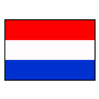

Netherlands
Quantas copas já participou?
- 1930 - Não disputou
- 1934-1938 - Eliminada na 1ª fase
- 1950-1954 - Não disputou
- 1958-1970 - Não se classificou
- 1974-1978 - Vice-campeã
- 1982-1986 - Não se classificou
- 1990 - Eliminada nas oitavas-de-final
- 1994 - Eliminada nas quartas-de-final
- 1998 - 4º lugar
- 2002 - Não se classificou
- 2006 - Eliminada nas oitavas-de-final
- 2010 - Vice-campeã
- 2014 - 3º lugar
- 2018 – Não se classificou
- 2022 – Classificado
Quais premiações alçancou nas copas do mundo
- 1934 - Eliminada na 1ª fase
- 1938 - Eliminada na 1ª fase
- 1974 - Vice-campeã
- 1978 - Vice-campeã
- 1990 - Eliminada nas oitavas-de-final
- 1994 - Eliminada nas quartas-de-final
- 1998 - 4º lugar
- 2006 - Eliminada nas oitavas-de-final
- 2010 - Vice-campeã
- 2014 - 3º lugar
- 2022 – Classificada
Seleção Tecnica :
tecnico
Pricipais joagadores
- Daley Blind
- Virgil van Dijk
- Nathan Aké
- Hans Hateboer
- Denzel Dumfries
- Matthijs de Ligt
- Jordan Teze
- Owen Wijndal
- Tyrell Malacia
- Jurriën Timber
- Georginio Wijnaldum
- Marten de Roon
- Jordy Clasie
- Davy Klaassen
- Frenkie de Jong
- Guus Til
- Teun Koopmeiners
- Steven Berghuis
- Memphis Depay
- Wout Weghorst
- Steven Bergwijn
- Arnaut Danjuma
- Cody Gakpo
- Noa Lang
- Donyell Malen
- Tim Krul
- Mark Flekken
- Joel Drommel
21/11
Senegal X Holanda
25 /11
Holanda X Equador
29/11
Holanda X Catar
(1).
(2)